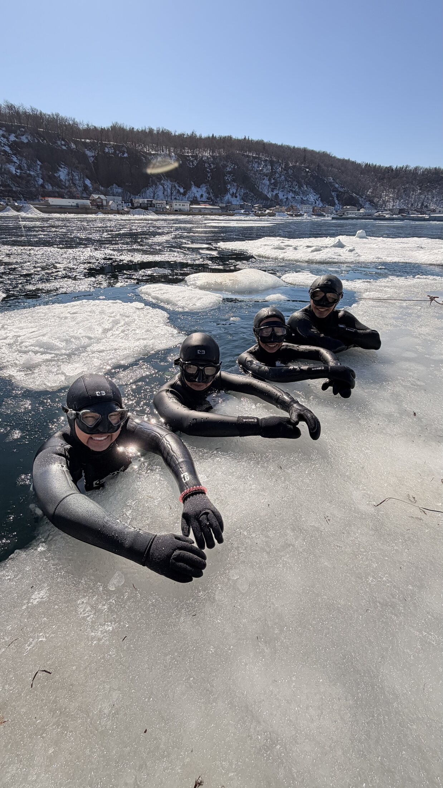

知床ウトロの流氷下を潜るファンダイブイベント。フリーダイビング資格をお持ちの方を対象に、少人数・安全重視で開催します。
| 開催予定日 | 2027年2月中旬〜3月上旬（流氷の接岸状況により調整の可能性があります） |
|---|---|
| 開催場所 | 北海道 斜里郡斜里町 ウトロ漁港周辺 |
| 形式 | ファンダイブ（記録を競わない体験潜水）。経験・希望に応じて個人アテンプト枠についてもご相談ください。 |
| 定員 | 安全運営の都合上、少人数制。先着・審査制でのご案内となります。 |
| 参加費 | 現在調整中です。詳細はお問い合わせください。 |
| 申込方法 | 下記フォームまたはメールよりお問い合わせください。折り返しご案内いたします。 |
安全のため、フリーダイビングの公式資格と一定の潜水経験を必須としています。資格取得団体や経験年数は問いませんが、事前にご経歴を確認させていただきます。冷水・寒冷地での経験がある方を優先的にご案内する場合があります。
ウェットスーツまたは衣服の中にウェットスーツを着用いただきます（ドライスーツでの参加についても応相談）。フィン・マスク等の個人装備はご持参ください。詳細な装備リストはお申し込み後にご案内します。
実際の日程は流氷の状況・天候により調整されます。確定情報はお申し込みいただいた方に別途ご案内します。
ウトロ現地集合。装備チェック、安全説明、チームミーティングを行います。
流氷に穴を開けた会場にて、セーフティチームの伴泳のもとファンダイブを行います。潜水の合間はサウナや焚き火で暖をとりながら過ごします。
天候・流氷状況による予備日。ご希望者は個人アテンプトについてもご相談いただけます。
現地にて解散。ご希望に応じて知床観光の情報もご案内します。
流氷の接岸状況は年によって大きく異なり、天候や海況によって開催内容・日程を変更する場合があります。近年は温暖化の影響で流氷の接岸が不安定になることもあり、その年ごとの自然条件と相談しながらの開催となります。あらかじめご了承ください。